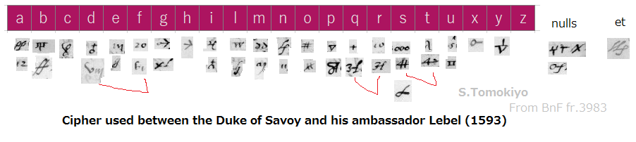

Reading Undeciphered Letters to the Duke of Savoy (1593)
BnF fr.3983 (Gallica), 3984 (Gallica), and 3985 (Gallica) in the French Archives include several letters (written in French) to the Duke of Savoy from his ambassador Lebel in Paris in 1593. Some are undeciphered but the cipher can be reconstructed from already deciphered letters.
The Duke of Savoy was married to a daughter of Philip II of Spain and he was given the tile of Count of Province in 1590 by the Catholic League of France (Wikipedia). The Duke, being a grandson of Francis I, had taken Saluzzo (the last remaining French possession in Italy) in 1588 (Jensen, Diplomacy and Dogmatism p.163-164) and took the fort of Exilles in May (De Thou, tom.12, p.68) 1593.
In 1593, talk was held in Paris to choose a king after the death of Henry III. Soon it became clear that the candidates of the Spanish and the League could not obtain national support and crowning Henry of Navarre after his conversion to Catholicism seemed the most realistic solution to the situation. The king of Navarre, reportedly saying "Paris is worth a Mass", made his conversion in July 1593. He would be crowned in February 1594 (Jensen p.216-218).
Reconstructed Cipher
The reconstructed cipher between the Duke of Savoy and his ambassador in Paris is as follows.

(The second symbol for "d" looks like two symbols "vm." At first, I thought the "v"-like symbol was "d" and the next "m"-like symbol was "e". But such an assumption results in two many superfluous occurrences of "e" in the decipherment. It seems the "v"-like symbol is never used alone.)
The cipher provides for a considerable number of code groups for common words and some names: 21 (pape), 23 (votre altesse [Duke of Savoy]), 26 (Duc de Mayenne), 29 (Roy de Navarre), 42 (Duc de Guise), 45 (Duc de Lorraine), 108 (par), 109 (qui), 110 (pour), 112 (il), 113 (luy), 280 (de), 292 (couronne). Notably, the words are not arranged in alphabetical order. Code numbers above 300 appears to have been introduced later in the correspondence and covers those words that were enciphered letter by letter earlier. This addenda assigns words generally in the alphabetical order: 342 (en), 362 (la), 364 (les), 398 (pouvoir), 409 (que), 413 (resolution), 426 (somme), 457 (Duc de Feria).
Reconstruction Work
By the way, the only problem in the reconstruction of this simple cipher from the deciphered letters was the handwriting of the plaintext. The first attempt at the interlined deciphering of BnF fr.3984 f.182 did not go well. With hindsight, some guesses like 12 (a) turned out to be correct but there were many other wrong guesses. In particular, the word "assignation" was discernible and occurred several times but the code groups 342 and 409, which seemed to appear near this word, turned out to be frequent groups for "en" and "que", which happened to be nearby because the plaintext and the cipher were not aligned well.
In the end, the direct clue came from the deciphering on the separate sheet of BnF fr.3983 f.166, which was hard for the modern reader but was at least written neatly. The pattern "pardessa x partira" allowed identification of symbols for "p", "a", "r", etc. and after this first breakthrough, there was no real difficulty.
Letters
The letters in cipher to the Duke of Savoy from his ambassador are as follows. Although many code groups are yet undeciphered, some of them may be identified by examining the handwriting of the deciphered letters.
Ambassador Lebel to the Duke of Savoy, 17 January 1593 (BnF fr.3983, f.26)


Ambassador Lebel to the Duke of Savoy, 10 March 1593 (BnF fr.3983, f.130)


Ambassador Lebel to the Duke of Savoy, 13 March 1593 (BnF fr.3983, f.166)
Deciphered in a separate sheet. See images in another article.
Ambassador Lebel to the Duke of Savoy, 27 March 1593 (BnF fr.3983, f.194)

A code group above 300 ("305") is found on the third line from the bottom.


A code group above 300 ("302") is seen.
Ambassador Lebel to the Duke of Savoy, 24 July 1593 (BnF fr.3984, f.182)
Deciphered between the lines. Plenty of code groups above 300.
Ambassador Lebel to the Duke of Savoy, 5 August 1593 (BnF fr.3985, f.23)
Deciphered between the lines. Plenty of code groups above 300.
Ambassador to the Duke of Savoy, 2 March, 4 July, 18 May 1593
(Added in December 2023) This cipher is also used in three letters from the ambassador to the Duke of Savoy (BnF es. 336 (Gallica; book catalogue; also catalogued in Italian (Google) p.158, f.159, f.160 (nos.79-81)).
©2017 S.Tomokiyo
First posted on 21 June 2017. Last modified on 3 December 2023.
Articles on Historical Cryptography